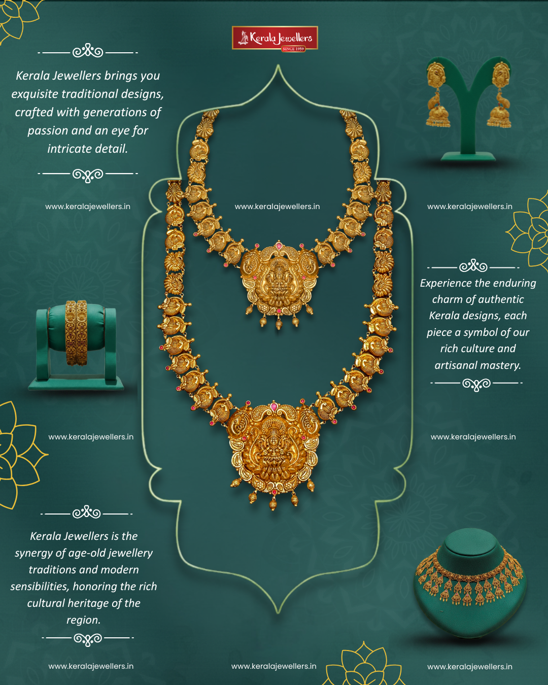

Wedding Season is here
Embrace the magic of the wedding season with our exquisite jewellery collection. Elevate your bridal ensemble or find the erfect gift for the happy couple with out stunning arrary od wedding-ready pieces.
Show Now
Our Blog
From shopping guides to lifestyle recommendations, explore our blog and learn everything you need to know about jewellery.
Our Blog
From shopping guides to lifestyle recommendations, explore our blog and learn everything you need to know about jewellery.

Where to Buy Gold Jewellery in Purasawalkam? A Trusted Choice for Families
Looking for the Best Jewellery Shop in Purasawalkam? Heres Why Shoppers Choose
Best Jewellery Shopping in Purasawalkam? Discover Trusted Designs at
Struggling to Find Trusted Gold Jewellery in Chennai? Heres the Solution
Why Kerala Jewellers is a Trusted Name for Gold Jewellery in
Kerala Jewellers Trusted Gold Jewellery Destination in Chennai
Akshaya Tritiya Jewellery Collections in Porur Explore Exclusive Gold Designs in Chennai
kshaya Tritiya Gold Buying Guide 2026 Best Jewellery Offers in Porur, Chennai
Akshaya Tritiya Gold Offers in Porur Why This Is the Best Time to Buy Gold
Bridal Gold Jewellery Trends in Kerala (2026 Guide)
Gold Jewellery Trends in Tamil Nadu 2026
.png)